내모남불 ① 자동차편 · 끼어들기 · 깜빡이 · 주차 — 그림 확인 (33장)
결과(왼쪽)를 첨부한 기준 그림과 비교한다: 얼굴 · 머리 · 옷 · 피부 톤 · 선 굵기 · 과장 정도. 판정은 naemonambul/01-car/jobs/review.json 에 "id": "ok" 또는 "redo: 이유" 로 적는다.
아빠 — 기본 common/dad/normal 확인 전
 결과①
결과① 화풍 앵커
화풍 앵커아이 — 기본 common/kid/normal 확인 전
 결과①화풍 앵커
결과①화풍 앵커엄마 — 기본 common/mom/normal 확인 전
 결과①화풍 앵커②
결과①화풍 앵커② 채널 프로필 — 오른쪽 위 안경 쓴 여자가 엄마③
채널 프로필 — 오른쪽 위 안경 쓴 여자가 엄마③ 채널 배너 — 맨 오른쪽 팔짱 낀 여자가 엄마
채널 배너 — 맨 오른쪽 팔짱 낀 여자가 엄마컷인 — 아빠 충격 common/cutin/dad-shock 확인 전
컷인 — 아빠 뿌듯 common/cutin/dad-proud 확인 전
 결과①화풍 앵커②같은 사람 유지용 기준 그림③
결과①화풍 앵커②같은 사람 유지용 기준 그림③ 그 사람 대표 컷인 (얼굴 · 피부 톤)
그 사람 대표 컷인 (얼굴 · 피부 톤)시그니처 — 아빠 네모 입막음 ① 손 올리기 common/cutin/dad-sig-1 확인 전
 결과①화풍 앵커②같은 사람 유지용 기준 그림③그 사람 대표 컷인 (얼굴 · 피부 톤)
결과①화풍 앵커②같은 사람 유지용 기준 그림③그 사람 대표 컷인 (얼굴 · 피부 톤)시그니처 — 아빠 네모 입막음 ② 입에 딱 common/cutin/dad-sig-2 확인 전
 결과①화풍 앵커②첫 번째 프레임 — 이 그림을 그대로 다시 그린다③그 사람 기준 그림 (normal)
결과①화풍 앵커②첫 번째 프레임 — 이 그림을 그대로 다시 그린다③그 사람 기준 그림 (normal)시그니처 — 아빠 네모 입막음 ③ 부들부들 common/cutin/dad-sig-3 확인 전
 결과①화풍 앵커②첫 번째 프레임 — 이 그림을 그대로 다시 그린다③그 사람 기준 그림 (normal)④바로 앞 컷
결과①화풍 앵커②첫 번째 프레임 — 이 그림을 그대로 다시 그린다③그 사람 기준 그림 (normal)④바로 앞 컷컷인 — 아이 질문 common/cutin/kid-ask 확인 전
컷인 — 아이 의심 common/cutin/kid-doubt 확인 전
컷인 — 엄마 다 안다는 미소 common/cutin/mom-smirk 확인 전
컷인 — 엄마 어이없음 common/cutin/mom-sigh 확인 전
 결과①화풍 앵커②같은 사람 유지용 기준 그림③
결과①화풍 앵커②같은 사람 유지용 기준 그림③ 그 사람 대표 컷인 (얼굴 · 피부 톤)
그 사람 대표 컷인 (얼굴 · 피부 톤)시그니처 — 엄마 양 볼 누르고 악! common/cutin/mom-sig-scream 확인 전
 결과①화풍 앵커②
결과①화풍 앵커② 앞 컷 · 기준 그림③그 사람 기준 그림 (normal)④그 사람 대표 컷인 (얼굴 · 피부 톤)
앞 컷 · 기준 그림③그 사람 기준 그림 (normal)④그 사람 대표 컷인 (얼굴 · 피부 톤)시그니처 — 엄마 검지 네모 ① 왼쪽 세로줄 common/cutin/mom-sig-1 확인 전
결과①화풍 앵커②같은 사람 유지용 기준 그림③엄마 얼굴 컷인 — 피부 · 얼굴 톤 기준
시그니처 — 엄마 검지 네모 ② 오른쪽 세로줄 common/cutin/mom-sig-2 확인 전
 결과①화풍 앵커②첫 번째 프레임 — 이 그림을 그대로 다시 그린다③그 사람 기준 그림 (normal)
결과①화풍 앵커②첫 번째 프레임 — 이 그림을 그대로 다시 그린다③그 사람 기준 그림 (normal)시그니처 — 엄마 검지 네모 ③ 위 가로줄 common/cutin/mom-sig-3 확인 전
 결과①화풍 앵커②첫 번째 프레임 — 이 그림을 그대로 다시 그린다③그 사람 기준 그림 (normal)④바로 앞 컷
결과①화풍 앵커②첫 번째 프레임 — 이 그림을 그대로 다시 그린다③그 사람 기준 그림 (normal)④바로 앞 컷시그니처 — 엄마 검지 네모 ④ 아래 가로줄 common/cutin/mom-sig-4 확인 전
 결과①화풍 앵커②첫 번째 프레임 — 이 그림을 그대로 다시 그린다③그 사람 기준 그림 (normal)④바로 앞 컷
결과①화풍 앵커②첫 번째 프레임 — 이 그림을 그대로 다시 그린다③그 사람 기준 그림 (normal)④바로 앞 컷장면 — 빨간 경차가 깜빡이 없이 코앞으로 끼어듦 full/highway-cutin 확인 전
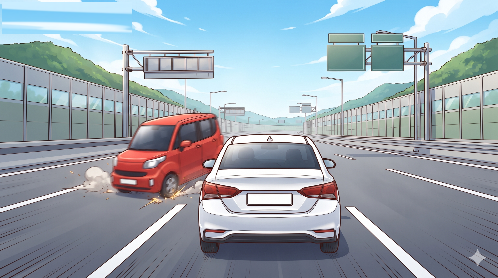
결과①화풍 앵커장면 — 차 안 정면 (아빠 운전 · 엄마 조수석 · 아이 뒷좌석) full/car-interior 확인 전
아빠 컷인 — 핸들 쥐고 분노 cutin/dad-rage-wheel 확인 전
결과①화풍 앵커②같은 사람 유지용 기준 그림③아빠 컷인 표정 참고
아빠 컷인 — 한 손 운전, 휘파람 "모 어때~" cutin/dad-chill 확인 전
결과①화풍 앵커②같은 사람 유지용 기준 그림③아빠 컷인 표정 참고④그 사람 대표 컷인 (얼굴 · 피부 톤)
장면 — 출구 앞 긴 줄, 맨 앞에서 끼어드는 검은 차 full/exit-queue 확인 전
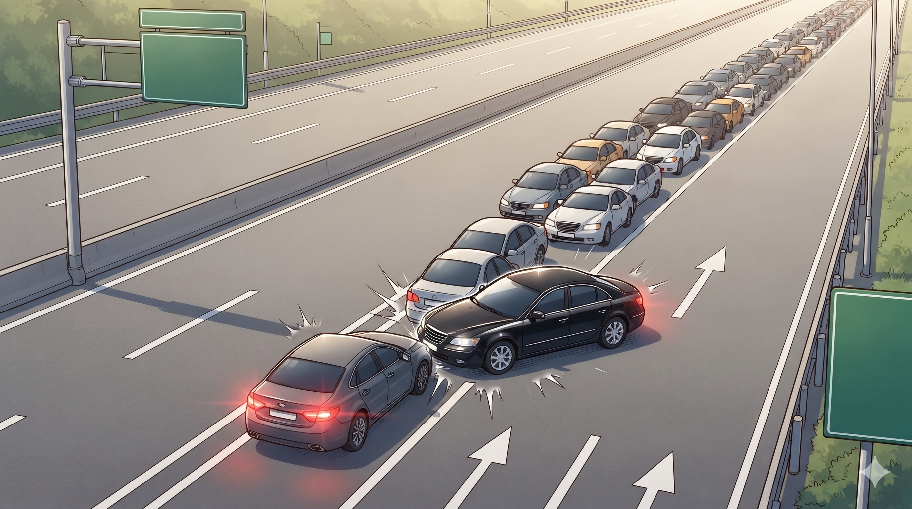
결과①화풍 앵커아빠의 상상 — 법복 입은 아빠가 망치를 탕 full/judge-imagine 확인 전
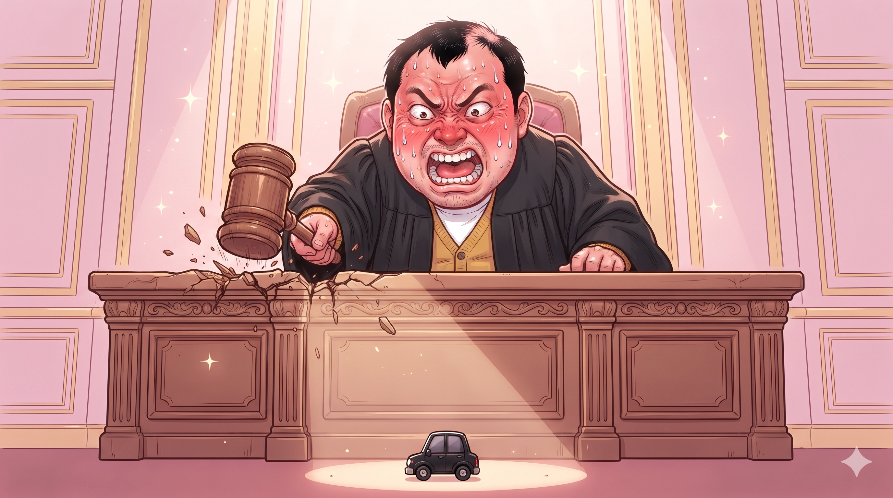
결과①화풍 앵커②같은 사람 유지용 기준 그림장면 — 아빠 차가 빈 차로로 달려 맨 앞에서 쓱 full/dad-merge 확인 전
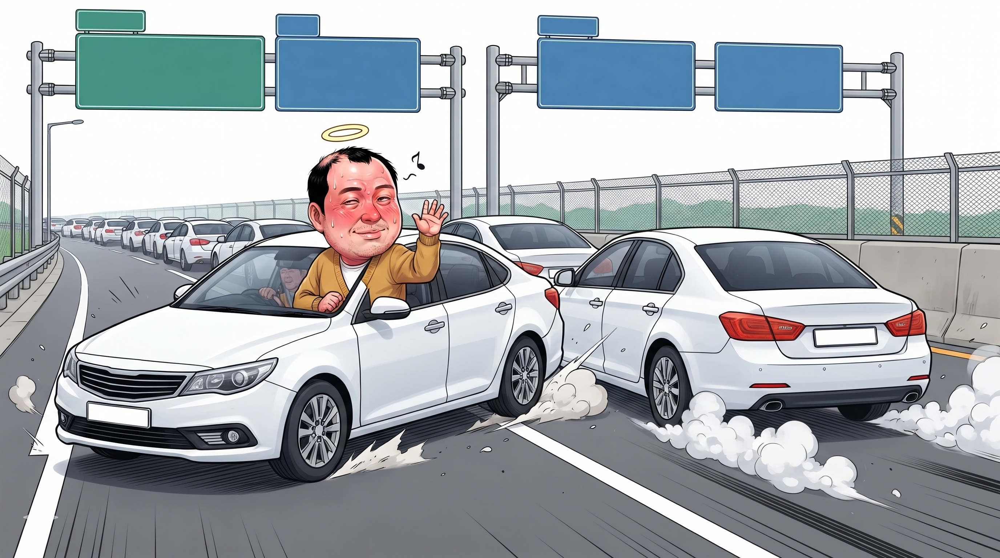
결과①화풍 앵커②같은 사람 유지용 기준 그림교통경찰관 — 기본 traffic/normal 확인 전
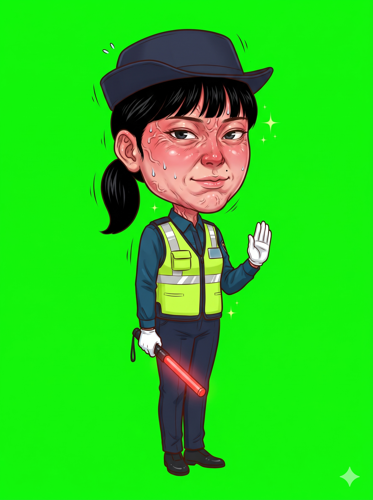
결과①화풍 앵커교통경찰관 — 경광봉으로 갓길 가리키기 traffic/point 확인 전
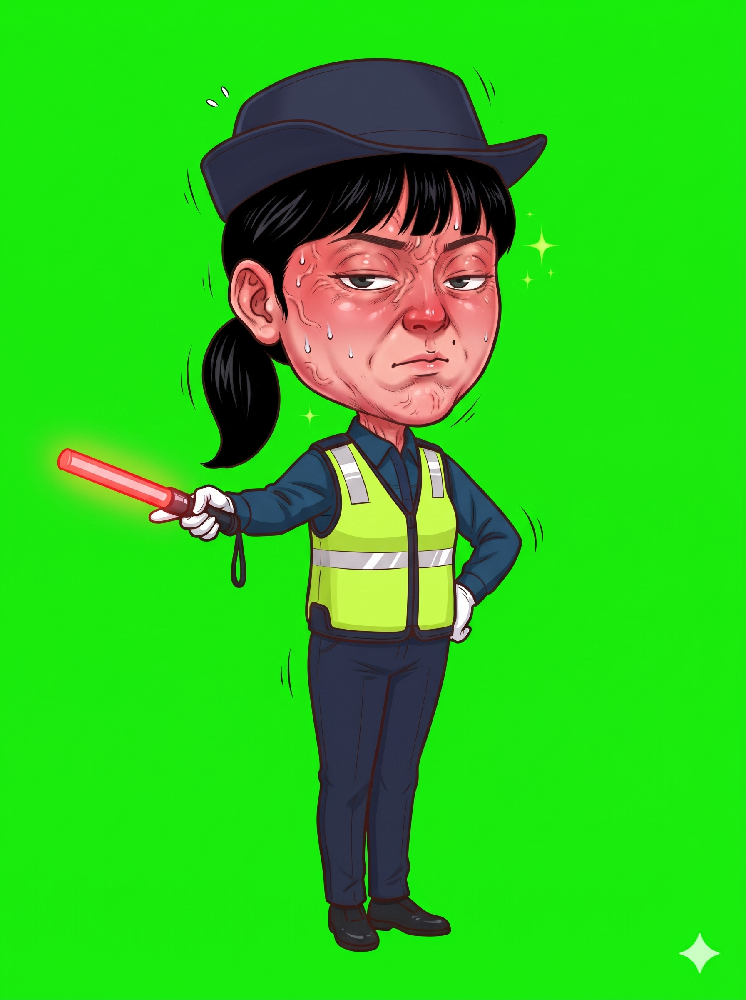
결과①화풍 앵커②같은 사람 유지용 기준 그림교통경찰관 정색 (컷인) cutin/traffic-flat 확인 전
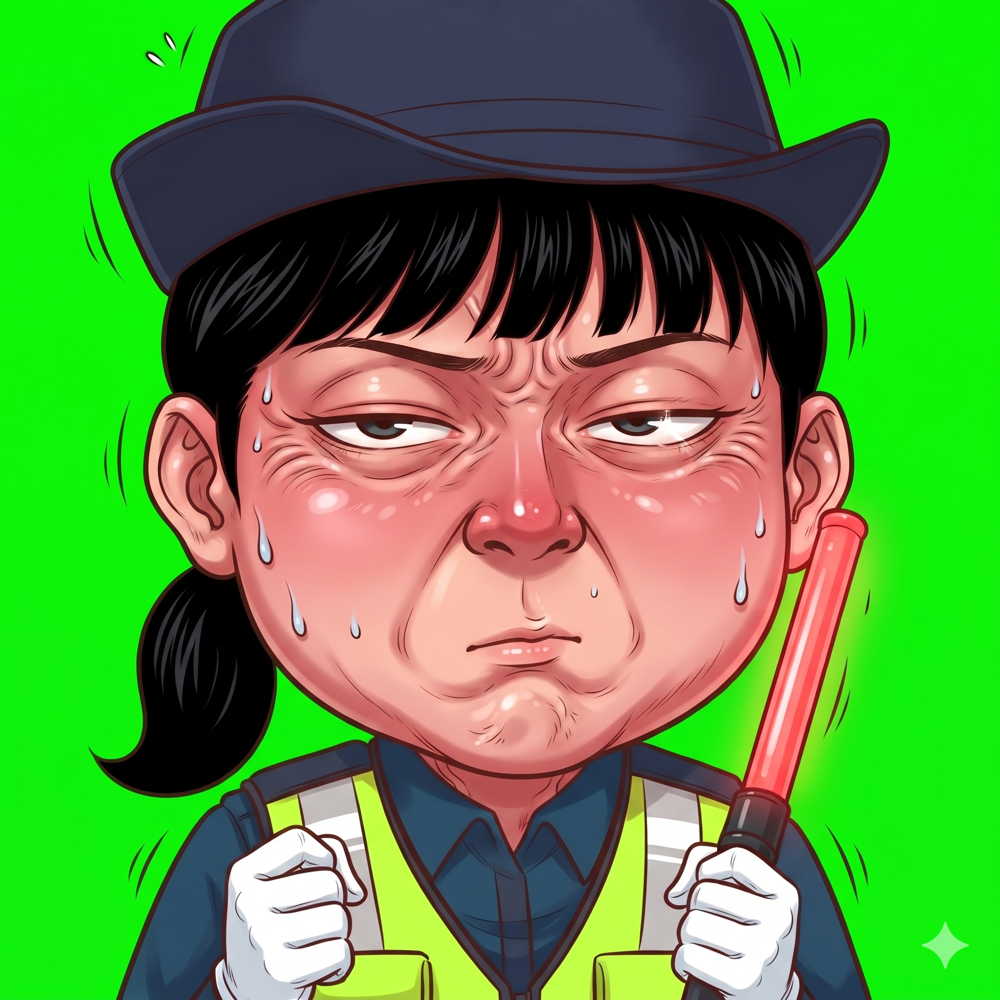
결과①화풍 앵커②같은 사람 유지용 기준 그림교통경찰관 — 비번, 장 보러 온 차림 traffic/shopping 확인 전
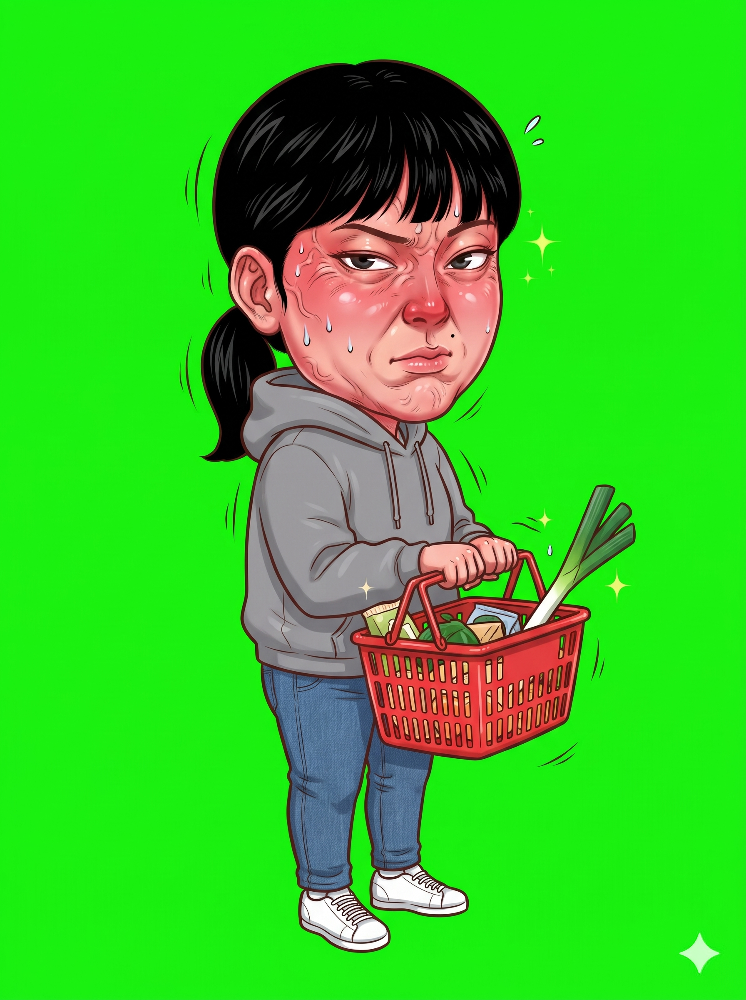
결과①화풍 앵커②같은 사람 유지용 기준 그림아빠 컷인 — 가슴에 손, 분홍 하트 "마음속으로 켰어" cutin/dad-heart 확인 전
결과①화풍 앵커②같은 사람 유지용 기준 그림③아빠 컷인 표정 참고④그 사람 대표 컷인 (얼굴 · 피부 톤)
장면 — 마트 앞 소화전, 그 앞에 선 남의 차 full/mart-hydrant 확인 전
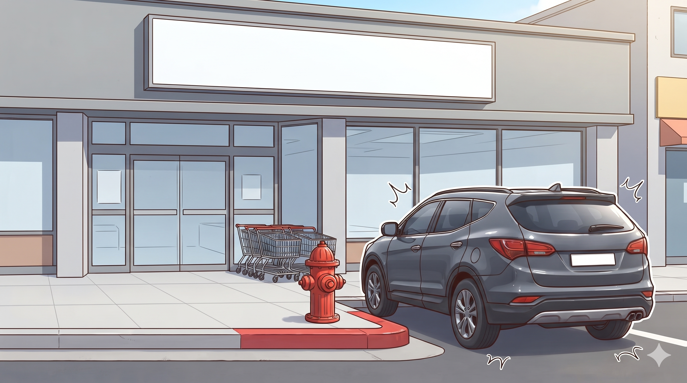
결과①화풍 앵커장면 — 아빠가 소화전 앞에 대고 "딱 1분만" full/dad-hydrant 확인 전
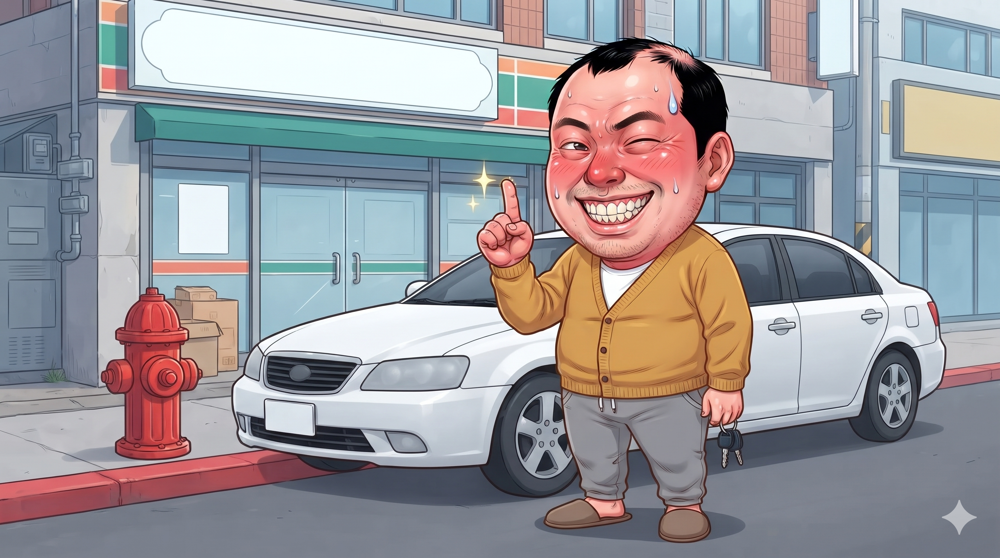
결과①화풍 앵커②같은 사람 유지용 기준 그림장면 — 노을빛 벤치의 아이와 아빠 (아이 눈높이) full/bench-sunset 확인 전
장면 — 돌아오는 길, 2km째 깜빡이 켠 흰 차 full/blinker-home 확인 전
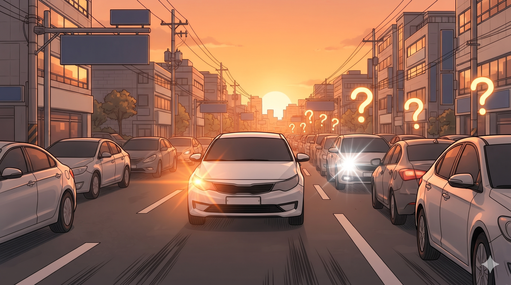
결과①화풍 앵커